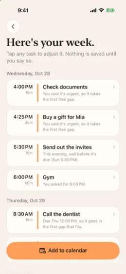
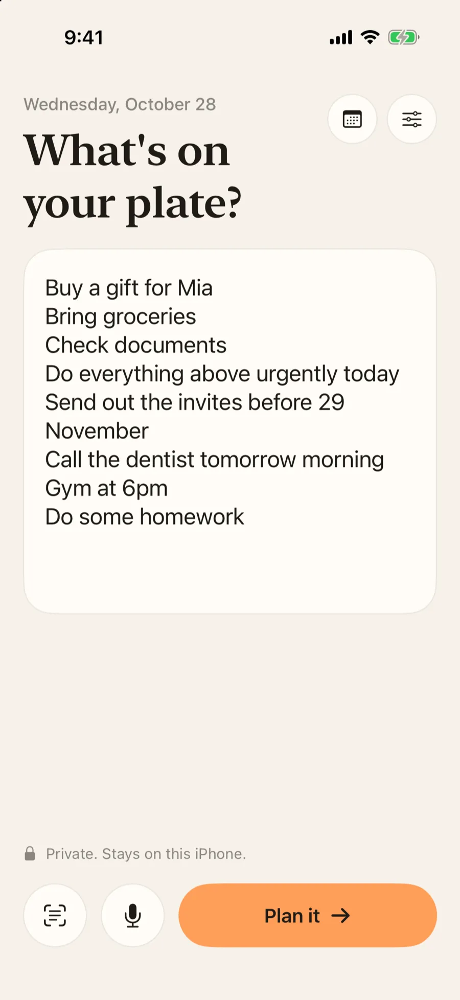

Pencilly · a private planner for iPhone
Plan your week around your real calendar.
Type, paste, scan or say what's on your plate. Pencilly finds the gaps in your calendars and puts each task where it fits. Everything is worked out on your phone.

No account. No servers. Nothing leaves your iPhone.

From a messy list to a plan, in three steps
No templates and no setup. Write the way you'd text a friend.
-

Say it however it comes
Type it, paste a chat, scan a page or speak. Scanning and voice both run on your iPhone.
-
Review the plan
Every task gets a time and a one-line reason. Tap any card to adjust it. Nothing is saved until you say so.
-

It fits around your day
Tap Add to calendar. Tasks land in free gaps, never on top of a meeting. One tap undoes it.
It reads how you actually write
Pencilly tells apart "at 3pm" from "by 3pm", and it explains each choice.
Gym at 6pmYou asked for 6:00 PM.
Call the dentist tomorrow morningDue Thu 12:00 PM, so it goes in the first gap that fits.
Check documents, urgently todayYou said it's urgent, so it takes the first free gap.
Built to respect your day
A plan you can trust is one that never surprises you.
Never double-books
Pencilly reads every calendar on your phone, ignores events you declined, and checks again when you tap Add.
Keeps meals and work hours clear
Lunch and dinner stay free. Work hours are avoided for every task unless nothing else fits.
Shows up where you look
Live Activities and the Dynamic Island show the task you're on, with Done and +15 min.
You stay in charge
Nothing reaches your calendar until you tap Add to calendar, and a stated time is always honoured.
Your calendar never leaves your phone.
Pencilly has no account and no servers of its own. Reading, planning, scanning and voice all happen on your iPhone, and the developer collects nothing.
- No account
- No servers
- No analytics
- No ads
Free to start
Try it on real weeks before you decide.
Free
10 plans
Your first 10 plans added to your calendar cost nothing.
$34.99 a year
7-day free trial. Or $4.99 a month. Cancel anytime in your Apple ID settings.
US prices, billed by Apple. See the terms.
Questions
Short answers. More on the support page.
Is Pencilly free?
The first 10 plans you add to your calendar are free. After that, Pencilly Pro is $34.99 a year with a 7-day free trial, or $4.99 a month (US prices). Manage or cancel in your Apple ID subscriptions.
Does Pencilly need an account or send my calendar anywhere?
No. There are no accounts and no servers. Your calendar, tasks, voice and images stay on your iPhone, and the developer collects no data. Read the privacy policy.
Which iPhones does it work on?
Any iPhone running iOS 18 or later. On an iPhone with Apple Intelligence (iOS 26 or later) Pencilly also uses Apple's on-device model to understand messy text; everywhere else, built-in rules do the work.
Will it double-book me?
No. It never overlaps an existing event, keeps lunch and dinner free, respects your work hours and leaves a gap around events. If your calendar changes while you review a plan, Pencilly checks again when you tap Add and moves anything that now clashes.
How do I undo a plan?
Tap Undo right after adding it, or delete the events from the "Pencilly" calendar in your Calendar app. Nothing is written until you tap Add to calendar.
What languages does it understand?
English only for now.
Pencilly at a glance
- What it is
- A day and week planner for iPhone that schedules your to-do list into free time in your calendars.
- Works on
- iPhone, iOS 18 or later. Apple Intelligence (iOS 26 or later) is optional.
- Data collected
- None. No account, no analytics, no ads, no third-party SDKs.
- Price (US)
- First 10 plans free. Pencilly Pro: $34.99 a year with a 7-day free trial, or $4.99 a month.
- Language
- English
- Developer
- rohanjsh, an independent developer
New to time blocking? Read how to plan your week from a messy to-do list.